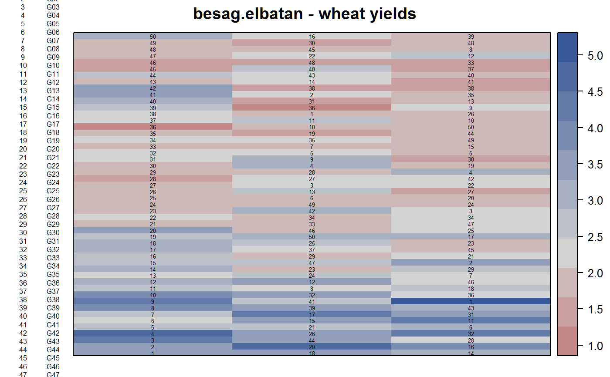
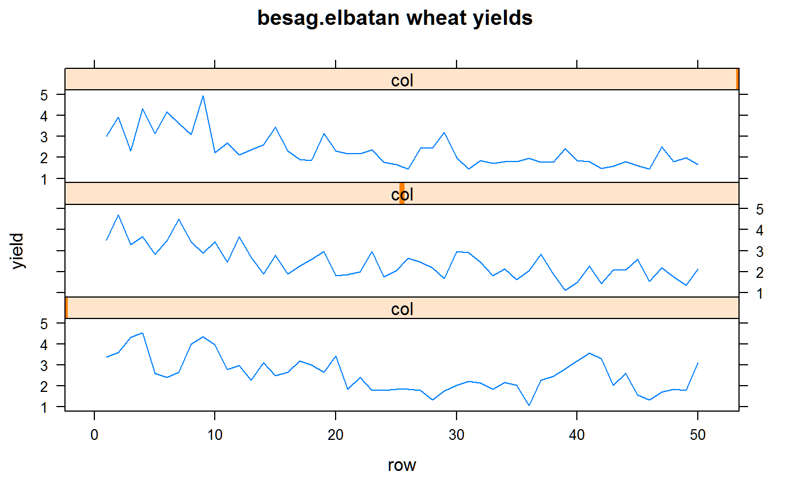
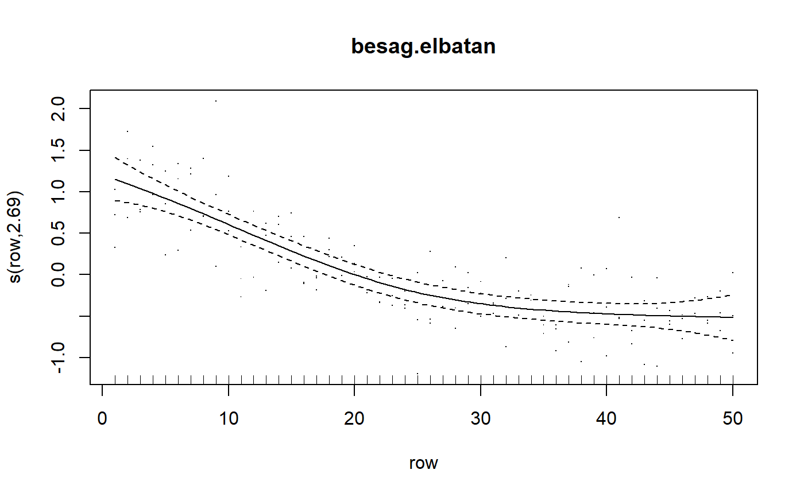
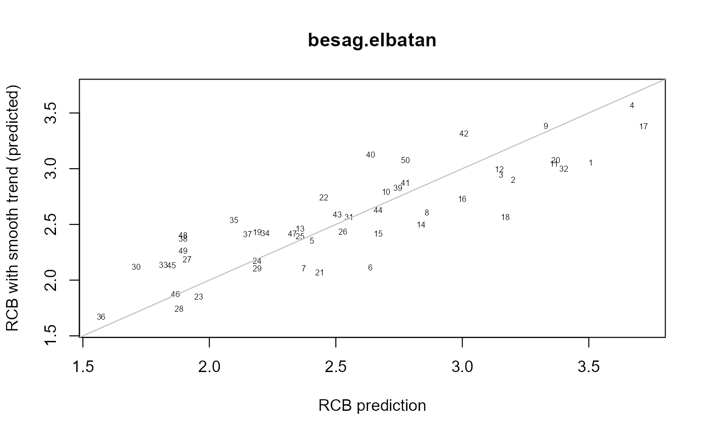

besag.elbatan.RdRCB experiment of wheat, 50 varieties in 3 blocks with strong spatial trend.
A data frame with 150 observations on the following 4 variables.
yieldyield of wheat
gengenotype, factor with 50 levels
colcolumn/block
rowrow
RCB experiment on wheat at El Batan, Mexico. There are three single-column replicates with 50 varieties in each replicate.
Plot dimensions are not given by Besag.
Data retrieved from http://web.archive.org/web/19991008143232/www.stat.duke.edu/~higdon/trials/elbatan.dat
Used with permission of David Higdon.
Julian Besag and D Higdon, 1999. Bayesian Analysis of Agricultural Field Experiments, Journal of the Royal Statistical Society: Series B,61, 691--746. Table 1. http://doi.org/10.1111/1467-9868.00201
Wilkinson 1984.
Besag & Seheult 1989.
# \dontrun{ library(agridat) data(besag.elbatan) dat <- besag.elbatan libs(desplot) desplot(dat, yield~col*row, num=gen, # aspect unknown main="besag.elbatan - wheat yields")# Besag figure 1 library(lattice) xyplot(yield~row|col, dat, type=c('l'), layout=c(1,3), main="besag.elbatan wheat yields")# RCB m1 <- lm(yield ~ 0 + gen + factor(col), dat) p1 <- coef(m1)[1:50] # Formerly used gam package, but as of R 3.1, Rcmd check --as-cran # is complaining # Calls: plot.gam ... model.matrix.gam -> predict -> predict.gam -> array # but it works perfectly in interactive mode !!! # Remove the FALSE to run the code below if(is.element("gam", search())) detach(package:gam) libs(mgcv)#>#> #>#> #> #>#> #> #>#>m2 <- mgcv::gam(yield ~ -1 + gen + factor(col) + s(row), data=dat) plot(m2, residuals=TRUE, main="besag.elbatan")pred <- cbind(dat, predict(m2, dat, type="terms")) # Need to correct for the average loess effect, which is like # an overall intercept term. adjlo <- mean(pred$"s(row)") p2 <- coef(m2)[1:50] + adjlo # Compare estimates lims <- range(c(p1,p2)) plot(p1, p2, xlab="RCB prediction", ylab="RCB with smooth trend (predicted)", type='n', xlim=lims, ylim=lims, main="besag.elbatan")# }